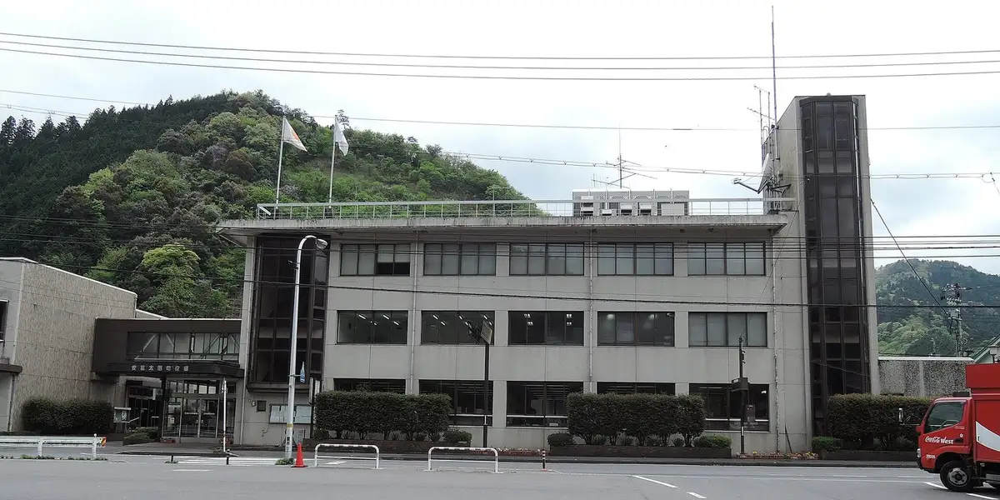
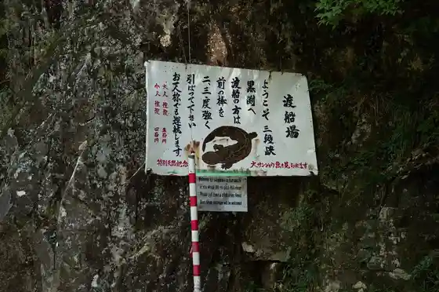
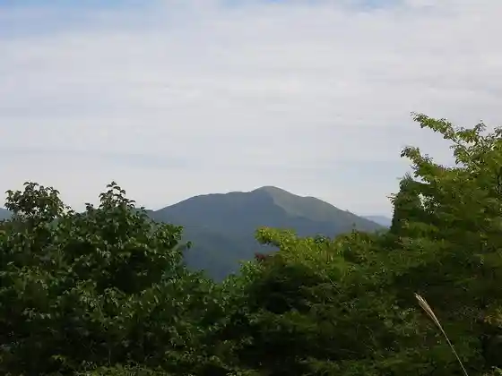

Akiota
Akiota · Hiroshima
Akiota
Highlighted on the Hiroshima map.

Stay
Guriinsupa Tsutsuga
Dining
Ofukuro Bento Momiji Korotsugamise
Taiyaki Ya Yoshio
Keiryu Chaen
Wafu Resutoran Raimu
Yamagawarau Osora Shokudo
Kitchintamagawa Nukui Mise
Yabu Gatsu
Takamaru Shoten Togochi Inta Mise
Tanada Kafe Ini Mini Manimo
Matsu Kyo Iori
Yokota Seika
Seiryu Village Kimagure Iori
Takamaru Shoten Sandankyo Main Shop
Kuro Fuchi So
no Su
Aji Sai Kiko Togochi Inta Mise
Onsen
Guriinsupa Tsutsuga Public Bath
Gatsugase Onsen
Sights
Sandankyo

Nukui Dam
Jinnyu Yama

Ini no Tanada
Osorakan Yama